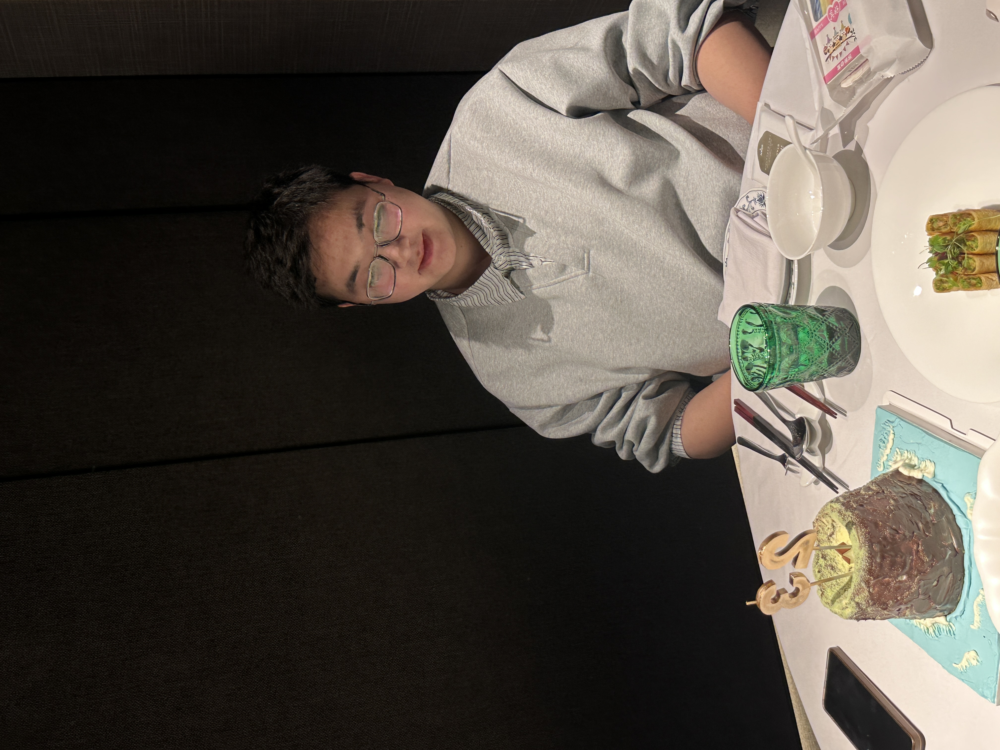
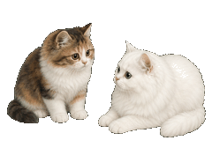

PhD Candidate @ HKUST(GZ)
I am a PhD candidate of Data Science and Analytics Thrust in Information Hub at The Hong Kong University of Science and Technology (Guangzhou), supervised by Prof. Wei Wang & Associate Prof. Nan Tang. My research interests include Large Language Models, Agent, AI4Science, and AI4Finance.
I am a fan of Eason Chan. I have two cats, Yuanxiao and Lixia.
Outside research, I enjoy traveling, photography, and hiking. I like documenting cities, mountains, and quiet moments along the way through my lens.


Beyond the Lab
A visual journal of cities, mountains, coastlines, and the small moments that made me stop and look.